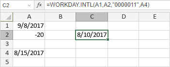

WORKDAY.INTL funkcija
Funkcija WORKDAY.INTL je jedna od funkcija za datum i vreme. Koristi se za vraćanje datuma pre ili posle određenog broja radnih dana uz prilagođene parametre za vikend; parametri vikenda određuju koji i koliko dana u nedelji se smatra vikendom.
Sintaksa
WORKDAY.INTL(start_date, days, [weekend], [holidays])
WORKDAY.INTL funkcija ima sledeće argumente:
| Argument | Opis |
|---|---|
| start_date | Prvi datum perioda unet pomoću DATE funkcije ili druge funkcije za datum i vreme. |
| days | Broj radnih dana pre ili posle start_date. Ako days ima negativan predznak, funkcija vraća datum koji prethodi određenom start_date. Ako days ima pozitivan predznak, funkcija vraća datum koji sledi nakon određenog start_date. |
| weekend | Opcioni argument, broj ili niz koji određuje koji dani se smatraju vikendom. Mogući brojevi su navedeni u tabeli ispod. |
| holidays | Opcioni argument koji određuje koji datumi pored vikenda nisu radni. Možete ih uneti pomoću DATE funkcije ili druge funkcije za datum i vreme, ili kao referencu na opseg ćelija koje sadrže datume. |
Argument weekend može biti jedan od sledećih:
| Broj | Vikend dani |
|---|---|
| 1 ili izostavljeno | Subota, Nedelja |
| 2 | Nedelja, Ponedeljak |
| 3 | Ponedeljak, Utorak |
| 4 | Utorak, Sreda |
| 5 | Sreda, Četvrtak |
| 6 | Četvrtak, Petak |
| 7 | Petak, Subota |
| 11 | Samo Nedelja |
| 12 | Samo Ponedeljak |
| 13 | Samo Utorak |
| 14 | Samo Sreda |
| 15 | Samo Četvrtak |
| 16 | Samo Petak |
| 17 | Samo Subota |
Napomene
Niz koji određuje vikend dane mora sadržati 7 karaktera. Svaki karakter predstavlja dan u nedelji, počevši od ponedeljka. 0 predstavlja radni dan, 1 predstavlja vikend dan. Na primer, "0000011" označava da su vikend Subota i Nedelja. Niz "1111111" nije važeći.
Kako primeniti WORKDAY.INTL funkciju.
Primeri
Na slici ispod prikazan je rezultat koji vraća WORKDAY.INTL funkcija.
